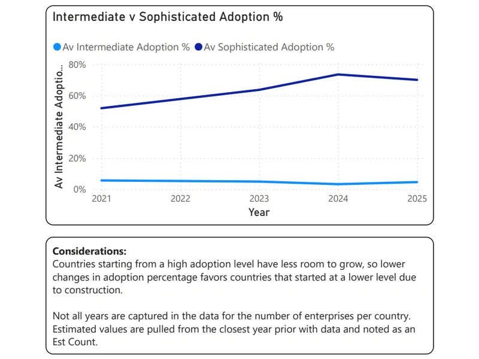

Salary Range Check
Market ranges for up to three roles, built from public wage data and ready for a pay-transparent job posting.
Hi, I'm Sara
I build salary bands, clean up messy HR data, and turn it into dashboards a small team can run on its own.

The Nordic leaders are near saturation. The fastest growth since 2021 is in central and eastern Europe.
Read the case studyBuild progress
Pick a place and get the payroll rules that apply there as a checklist, with a source for every rule.
See where the build isRemote, scoped up front, and quick to turn around. I work from public data or your anonymized export.
Market ranges for up to three roles, built from public wage data and ready for a pay-transparent job posting.
Your HR export cleaned and turned into a one-page dashboard on headcount, turnover, and pay.
A review of your posting, interview steps, and offer process, with a short list of fixes.
A Power BI or Excel dashboard on your own data, with the cleanup and notes to keep it running.
My career took off at Alleviate Tax, a financial services startup in Irvine, California, where I became Director of Operations within three months. I ran HR for the team and kept picking up the work nobody else owned: pay structures, hiring data, and the systems behind them. That's where compensation and people data became my focus.
I've worked in compensation for eight years, across five employers. I've built job levels and salary bands, priced roles against the market, and run annual pay reviews end to end. For three years I've also run the Oregon salary survey for the Association of Legal Administrators, covering about 45 firms. That includes working with Gallagher to make its job descriptions hold up for firms of every size. So I produce market data as well as use it.
Data runs through all of it. I hold an MBA and an MSc in Applied Data Science, with a focus on HR analytics, from Portland State University. I do my own analysis, build my own dashboards, and follow pay transparency law closely, including the EU directive.
Outside work, I draw in Procreate, mostly for my kids.